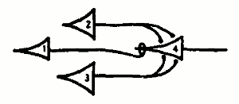

McCulloch & Pitts Neural Net Simulator
How does this work?
Each neuron has input fibers and output fibers which connect it to other neurons. A neuron fires after it receives a number of signals from its input fibers, greater or equal to its threshold (the number written on it.) Fibers which have a circle at the end are called inhibiatory fibers. If a neuron recieves an inhibitory signal, it will not fire, regardless of how many signals it recieves.
- Create Neuron Right click and select "New Neuron"
- Move Neuron Click and drag on a neuron.
- Delete Neuron Select a neuron and press the delete key.
- Set Threshold Select a neuron and press a number key (0-9).
- Create Fiber Hover near the outside of a cell. Click and drag to create a fiber.
Examples
What are McCulloch & Pitts Neural Nets?
McCulloch and Pitts were researchers in neuroscience who became pioneers in artifical intelligence. In 1943 they created a computation model of how neurons fire in our brains. This project is a simulator of that model.
Even though these neural nets are inspired by biology, they aren't an accurate representation of their physical properties. They are a simplification for computational purposes. Marvin Minsky says:
It should be understood clearly that neither McCulloch, Pitts, nor the present writer considers these devices and machines to serve as accurate physiological models of nerve cells and tissues. They were not designed with that purpose in mind. They are designed for the representation and analysis of the logic of situations that arise in any discrete process, be it in brain, computer, or anywhere else. In theories which are more seriously intended to be brain models, the “neurons” have to be much more complicated. The real biological neuron is much more complex than our simple logical units for the evolution of nerve cells has led to very intricate and specialized organs.
Their work later became important in the Theory of Computation. In 1951, Kleene proved that the patterns which are recognizable by the neural nets are precisely the Regular Expressions. This is commonly known as Kleene's Theorem. Finite state machines and neural nets are computationally equivalent.
If you want to learn more, I recommend Marvin Minsky's book: Computation: Finite & Infinite.